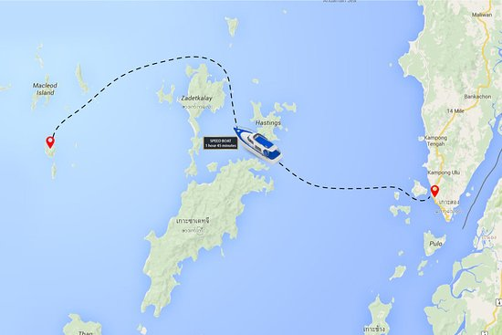
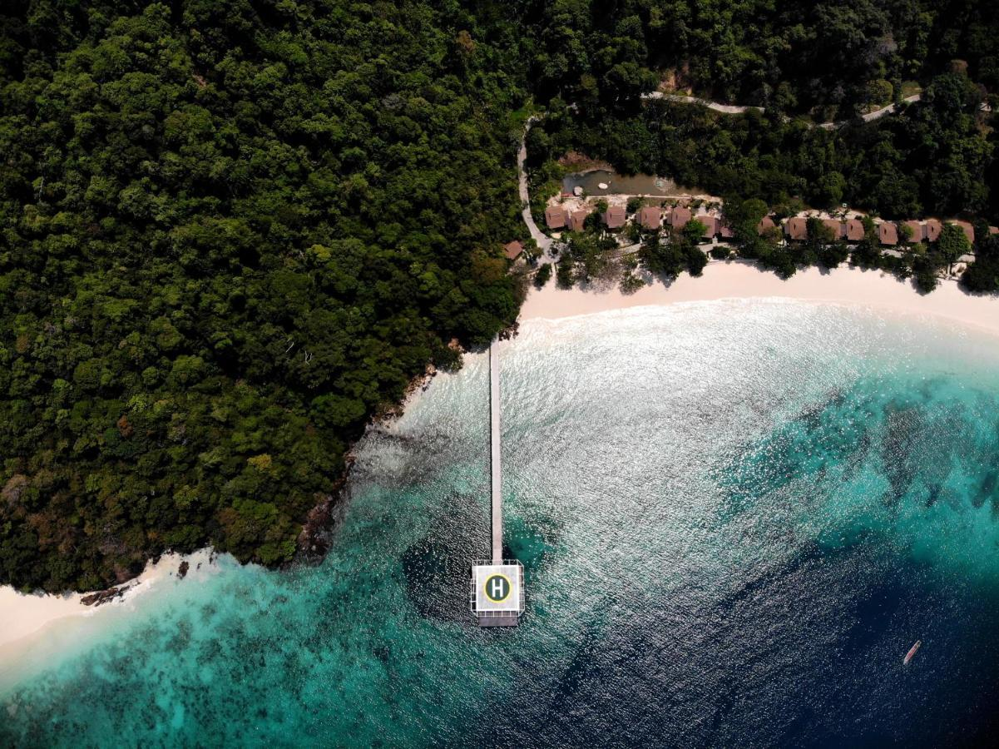
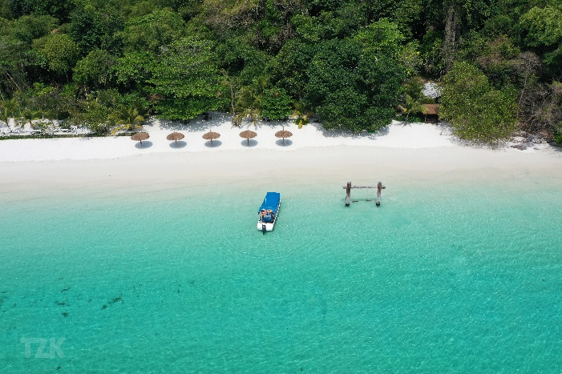
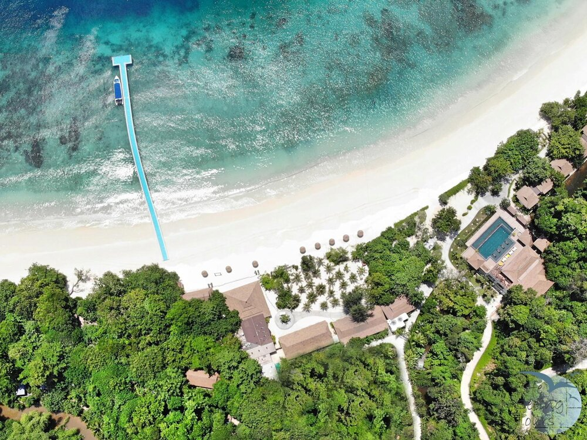
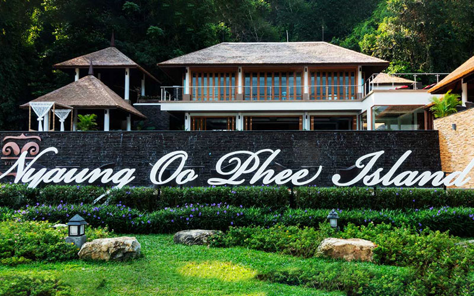

Nyaung Oo Phee Island


Nyaung Oo Phee Island is located in Myanmar’s Tanintharyi Region, near the Mergui Archipelago in the Andaman Sea. The island can be reached only by boat from Kawthaung, Myanmar. Travelers can take a speedboat or a local boat from Kawthaung to reach the island, which is known for its crystal-clear waters, white sandy beaches, and rich marine life.

Tha special feature is the thick self-cleaning sand beache and the beautiful clear blue water, marking it ideal for snorkeling (under water viewing) and it is suitable for Scuba diving There are direct speed boats from KAWTHANG to the Island of wales, which takes about 45 mintes a hour.
Gallery


